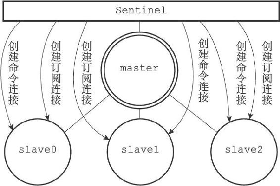
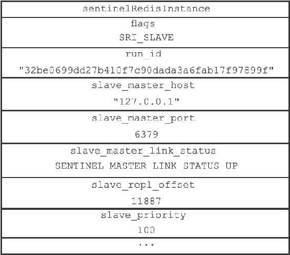

16.3 获取从服务器信息
当Sentinel发现主服务器有新的从服务器出现时，Sentinel除了会为这个新的从服务器创建相应的实例结构之外，Sentinel还会创建连接到从服务器的命令连接和订阅连接。
举个例子，对于图16-10所示的主从服务器关系来说，Sentinel将对slave0、slave1和slave2三个从服务器分别创建命令连接和订阅连接，如图16-11所示。

图16-11 Sentinel与各个从服务器建立命令连接和订阅连接
在创建命令连接之后，Sentinel在默认情况下，会以每十秒一次的频率通过命令连接向从服务器发送INFO命令，并获得类似于以下内容的回复：
# Server
...
run_id:32be0699dd27b410f7c90dada3a6fab17f97899f
...
# Replication
role:slave
master_host:127.0.0.1
master_port:6379
master_link_status:up
slave_repl_offset:11887
slave_priority:100
# Other sections
...
根据INFO命令的回复，Sentinel会提取出以下信息：
·从服务器的运行ID run_id。
·从服务器的角色role。
·主服务器的IP地址master_host，以及主服务器的端口号master_port。
·主从服务器的连接状态master_link_status。
·从服务器的优先级slave_priority。
·从服务器的复制偏移量slave_repl_offset。
根据这些信息，Sentinel会对从服务器的实例结构进行更新，图16-12展示了Sentinel根据上面的INFO命令回复对从服务器的实例结构进行更新之后，实例结构的样子。

图16-12 从服务器实例结构